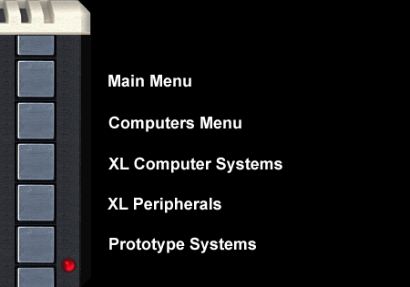

SW
Implementation of Parallel Devices May 22, 1984
Atari 600XL Schematics
|
|
The Atari 600XL Computer
System
Codename: Shirley (NY.) / Surely (CA.)
*** Early Project codenames and references:
S-16, 1000 and Crazy-8

The Atari 600XL home
computer system. The specifications for the 600XL were created in the
March1983, just a few months after the introduction of the 1200XL
computer system. The system was originally spec'd informally as part of
the Sweet-16 project and while the 1200XL was codenamed "Sweet-16" it
was actually the S-64 or Sweet-64 after its 64K memory. The 600XL was
the real Sweet-16 or S-16 which was the 16K version. However the S-16
was meant to look and be in the same case as the 1200XL, just to be the
600XL, although the original model numbers were the 1000 and 1000X (the
1000X was the 64K version)
The S-16 or 600XL was meant to be
a peer replacement for the Atari 400 computer system. To give it a peer model
number, it was half of the 1200XL model number just as the 400 was half of what
the Atari 800 model number was.
Unlike the original S-16, the
600XL came with built-in BASIC. The 600XL specification would bring back the
original Sweet-16 specification of having a PBI (Parallel Bus Interface) on the
rear of the unit to accommodate Parallel Bus expansion devices such as the Atari
1064 64K memory module and the Atari 1090XL Expansion System.
The Atari 600XL, just like the
Atari 400 lacked a composite video output port. After reviewing the original
design specifications and first revisions of the schematics of the 600XL, the
long standing rumor that the 600XL was to have composite video but was cut from
the design to reduce costs is in fact untrue. The Atari 600XL looks slightly
smaller then the 800XL but with the exception of the lack of composite video and
16K instead of 64K (standard on the 800XL,) the Atari 600XL personal computer
was functionally equivalent to the 800XL personal computer.
The ORANGE
Atari 600XL ?!?!?
Click Here
Are you a former Atari engineer?
Did you work on the 600XL or have direct knowledge of this project?
Please contact the Atari Museum:
CLICK HERE
|
|
|

{kind=link}